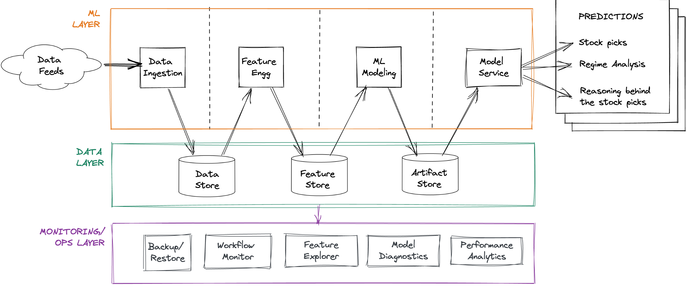

Didact AI¶
Introduction
Didact AI Goal: Build an ML-powered stock picking engine to consistently beat the market.
Development: Worked full-time for 2 years (2019-2021).
Performance: Generated outstanding returns, steadily beating S&P 500 for over a year (Jun 2021 - Jul 2022).
Didact Total Return: +14.2% vs. S&P 500 (SPY) -7.1%.
Key Metric: Low correlation with SPY (0.18 weekly), indicating alpha generation.
Downside Protection: Significantly lower downside deviation (0.39% vs 1.22% for SPY weekly) and better returns when SPY was negative (-0.31% vs -2.03% for SPY weekly).
Reason for Shutdown: Perceived lack of Product-Market Fit (PMF) for the newsletter service.
Focus of Post: Architecture and technology of the engine, covering data ingestion, feature engineering, modeling, and MLOps.
Markets: Patterns, Regimes, Regime Shifts, and Sentiment
Core Assumptions/Priors:
Market Patterns: Chunks of similar price-volume actions repeated across time (e.g., chart patterns, complex multi-market time-series artifacts). Ephemeral, payoffs change as they evolve and speculators adapt.
Market Regimes: The “context” in which assets operate (e.g., bull/bear market, geopolitical sentiment affecting commodities). Can be fine-grained (hundreds of regimes in Didact) or coarse-grained. Didact models asset and market dynamics together using regimes.
Regime Shifts: Sudden switches between market regimes, often due to exogenous circumstances, reflected in asset repricing. Regimes typically last 21-35 days (mean/median); shifts can be rapid or gradual.
Market Sentiment: Aggregated bullish/bearish behavior across assets/classes. Best captured by relative trading volumes weighted by periodic returns (e.g., high negative returns + high volume = negative sentiment). Sentiment often moves assets in lockstep during regime shifts (“correlations tend to 1”).
Didact’s Approach: Stitches these concepts (patterns contextualized by regimes and sentiment) to power predictions.
Engine architecture: A 50k ft view
Pipeline Structure: Raw financial market data -> data cleansing -> feature engineering/filtering -> action-oriented modules (stock picks). Includes a control panel and long-running monitoring.
High-Level Components:
Data Sources (External Providers, Internal Data Store)
Data Ingestion Pipeline
Data Layer (Data Store, Feature Store, Artifact Store)
ML Layer (Feature Engineering, Pythia Forecasting Model, Cassandra Regime Model, Socrates Model Explanations)
ML Ops / Monitoring Layer (Backup/Restore, Workflow Monitoring, Feature Explorer, Model Diagnostics, Performance Analytics)
Output (Weekly Picks via Newsletter)
Architecture
Design focus
Primary Aim: Enable rapid experimentation with feature engineering, believing it’s key to success over model choice.
Secondary Aim: Relentless focus on execution speed.
Daily Processing: Text and time-series for >4000 US stocks, ETFs, macro series.
Feature Generation: 1000+ features per stock (cross-sector, industry, index, fund ownership).
Quarterly Processing: Earnings call transcripts, SEC EDGAR filings using deep learning language models (compute-intensive, batched weekly on GPU EC2 instances for cost savings).
Performance Improvement: Raw data to insight timeline reduced from ~2.5 hours to ~14 minutes.
Tech stack
ML Layer: Almost exclusively Python. Some SQL for pipeline parts, Pandas alternatives for bottlenecks. Sequential execution with input validation and quality checks.
Data Layer:
Data Store:
Initially: Postgres (speed issues with many columns as features). Eventually: DuckDB (column-oriented embedded DB, good performance, plays well with Arrow/Parquet).
Feature Store:
Initially: Redis (persisted to disk) with a custom feature access layer for fine-grained engineering and aggregations.
Augmented with DuckDB: Pushed basic feature engineering to SQL scripts (mimicking Pandas WINDOW functions) for rapid columnar processing.
Artifact Store: Local disk storage, backed up daily to AWS S3 (60-day local retention). Includes serialized models, forecasts, regime metrics, training data snapshots.
ML Ops / Monitoring Layer: Python scripts generating reports (except Feature Explorer).
Python environment setup
Base: Python 3.8 Conda environment.
Key Packages:
Data engineering:
duckdb,numpy,pandas,pyarrow,boto,redislite.ML Modeling:
jupyter,pandas,numpy,polars,joblib,bottleneck,pytorch,tsfresh,transformers(Hugging Face),xgboost,scikit-learn,scipy.ML Ops:
dash(Plotly),fastapi.
Parallelism: Judicious use of
multiprocessingfor CPU-intensive tasks not suited for GPUs. (Cloud GPUs considered expensive, hence no NVidia RAPIDS).
Execution platform
Infrastructure: AWS.
Instance:
r5a.2xlargeEC2 (8 vCPUs, 64 GB RAM, optimized for in-memory compute) with EBS volume.Self-Hosted: Redis + Postgres (initially) on the EC2 instance.
Backups: Private, locked-down S3 buckets.
Pipeline scheduling
Frequency: Executed daily, 2 hours after market close (allows data feed refresh).
Data Quality: Checks on incoming data; re-polls providers if necessary.
Production Scheduling (Past):
cronjobs executing shell scripts calling Python modules.Current Rewrite: Moving to Apache Airflow for DAG orchestration.
Stock Pick Extraction: Only from Friday’s run (or last trading day of the week) to reduce cognitive burden for users.
Interlude: Complexity in financial data
Multi-modal & Complex: Text, time series, implicit network graphs.
Data Feed Examples:
Options Data: Bids/asks, volumes, open interest, IV for all contracts, grouped by expiry, strike, type. Contracts expire and are replaced.
Corporate Actions: Need tooling to track name/ticker changes, splits, spinoffs, mergers for time-series consistency (these actions are also mined as features). One-off scripts for major events (e.g., Google/Alphabet).
Index Reconstitutions: (S&P 500, Russell) Announced in advance, trigger massive capital flows. Capturing these as features provides marginal alpha.
Calendar Events: Track FOMC meetings, holidays, options/futures expiry, witching days, macro releases (NFP, unemployment).
Text Data (Earnings Transcripts, EDGAR Filings): Use SOTA language models to infer uncertainty from changes in topics, word frequencies, sentiment. Aggregate sector/industry sentiment can be predictive.
The data ingestion pipeline
Daily Raw Data: ~0.5 GB, complex, multiple feeds, cross-cutting relationships.
Process:
Grab latest daily data for US stocks into Arrow DataFrames.
Basic quality checks (e.g., missing data for active stocks, bad prints).
Bad print detection: Unlikely implied returns, compare against corporate actions. Re-fetch if likely bad print.
(Planned: Use Great Expectations for DQ tests).
Columnar Compression / Basic Transforms: Normalize denormalized commercial feeds. Column type casting (e.g., symbols as Categoricals), drop columns, map timestamps to
uint16(date, time) pairs to save space.Push transformed data from DataFrames into DuckDB.
Backups: ML Ops script saves updates from data store to Parquet files and pushes to AWS S3.
Interlude: How I think about ML in markets
Various ways to frame financial market forecasting with ML:
Supervised Learning: Regression (predict return) or classification (predict outperformance).
Unsupervised Learning: Discern market regimes as clusters with associated forward trajectories.
Self-Supervised Learning: Like classical autoregression (ARIMA) or masking/predicting parts of feature vectors.
Learning to Rank: Rank stocks by expected forward returns (from Information Retrieval).
Recommender System: Stocks as items, market regimes as users; recommend appropriate stocks for a regime (e.g., collaborative filtering).
Reinforcement Learning: Trading agents maximizing ROI by buying/selling.
Goal: Blend best ideas from each sub-field.
Feature Engineering pipeline
Feature Vector Composition (per stock, per day EOD):
Raw Features from Feature Groups: (Price/volumes, options chains, text sentiment).
Basic Intra-Group Engineering: (e.g., (Close-Low)/(High-Low) from price/volume). Scores of these.
Peer Contextualization/Normalization: Compare stock’s data against peers (sector, industry, index, co-ownership patterns). Compute percentiles. (Critical: maintain as-of-date reference data for peer groups).
Historical Contextualization: Compare stock’s data against its own history (e.g., closing price vs. last 1-year close). Percentiles, ratios, statistical measures (std dev, skew, kurtosis) on rolling windows.
Cross-Group Features: Combine features across groups (e.g., price-to-sales, price delta / sentiment delta).
Trading Strategy-Based Features: Run various strategies (technical, momentum, value, quality, etc.), capture predictions as features (idea: some strategies profitable in certain regimes).
Market Regime-Based Features: Current market state (VIX term structure, S&P 500 vs. 200-DMA, yield curve shape, macro release trajectories).
Piece-de-Resistance: Accuracy gap (latest predictions vs. actual realized values, as percentages) included as a feature. Helps model detect regime shifts faster.
Event time vs chronological time
Chronological Time (“Clock Time”): Standard financial data aggregation (per-minute, -hour, -day).
Event Time: Measure “time” by event counts (e.g., per-100 trades), leading to “volume bars.”
Analogy: Similar to time domain vs. frequency domain in signal theory.
Benefit: Allows design of new ML features capturing inverted time-related info.
Approximation: Since trade-level data isn’t available, “invert” 1-minute data to approximate event time features.
ML Modeling subsystem
Feature Matrix: ~4000 stocks, features computed for last 250 days (with forward data). ~1M data points. Sufficient for complex gradient boosted trees.
Model Choice Rationale:
Why Gradient Boosting (GBDTs)? Better at handling imbalanced data and novel market regimes than random forests.
Why not Deep Learning? Dataset size too small. Would require different modeling approach (though ideas for transformer-based architectures exist).
Pythia: Forecasting Model
Tool:
xgboost.Target: Pick stocks with >75% probability of generating forward Sortino ratios >2.0x that of SPY. If >20 stocks, pick top 20 by probability.
Retraining: Daily (even if picks used weekly) to track mid-week regime shifts.
Cassandra: Regime Model
Tracks current market regime.
Computes forward trajectory projections for S&P 500, Nasdaq, Russell 2000.
Maintains forecasts of next likely regime shifts (critical for Pythia’s performance).
Focuses on subset of feature matrix related to index-level aggregated info.
Socrates: Model Explanations
Provides narrative explanations for why specific stocks were picked.
Uses
shapto generate explanations from the model, then processes for human comprehensibility.(Future: NLG for succinct sentence explanations).
ML Ops: Forecasting and Monitoring
Control Plane: Mostly manual invocation (except automated backups).
Primary Objective: Monitor ML pipeline for errors, bugs, potential catastrophic drops in profitability (even if unlikely due to regime shift accounting).
Secondary Objective: Explore individual features (drifts, patterns, correlations) to inspire new feature ideas.
Backup/Restore:
Backs up: raw data (Parquet), serialized models, predictions, regime forecasts, feature matrices, training data snapshots to private AWS S3.
Nothing deleted from S3.
Restore module like simplified
rsync, maintaining a time window (e.g., last 60 days).
Workflow Monitoring: Script analyzes ML pipeline logs, sends SUCCESS/FAILURE (with diagnosis) reports via email. (Planned: browser-based admin panel).
Feature Explorer: Jupyter notebook based tool (early version used Plotly Dash with Bootstrap) for exploring constructed features and rapidly testing new feature ideas.
Model Diagnostics: Traces predictions, compares to realized returns, tracks accuracy gap evolution (backtested & walkforward). Dramatic spikes may indicate fundamental market changes.
Performance Analytics: Tracks model performance (hypothetical portfolio returns vs. SPY) using standard trading metrics (Sortino, Sharpe, volatility, downside risk, win/loss, profit factors).
Tackling performance bottlenecks
Changes to speed up pipeline execution:
Postgres -> DuckDB (for data store): In-memory columnar processing was beneficial, especially for bulk vectorized computations during ingestion.
Pandas -> PyArrow + DuckDB (ingestion pipeline): PyArrow for reading/cleaning, then zero-copy load into DuckDB.
Numpy -> Bottleneck (feature engineering): Fast C-based Numpy functions saved CPU cycles.
Pandas -> Polars (feature engineering): Rust-based DataFrame library integrated with Arrow, provided speedups (care needed as functions don’t map 1-to-1).
Redesigning Pipelines for Multiprocessing: Using all EC2 cores beyond vectorization.
Coda: Why I shut down Didact
Market Timing: Launched newsletter (June 2021) as COVID bull run was ending.
Bull Market Challenge: Hard to stand out on performance alone when “everyone’s a genius” (e.g., GME).
Unstable Market Challenge: Easier to stand out (Didact did well against losses), but target market (retail investors) exhibits loss aversion and endowment effect, preferring to wait for old holdings to recover rather than allocate to a new systematic engine.
PMF Trap: This behavioral bias played a major role in shutting down the newsletter.